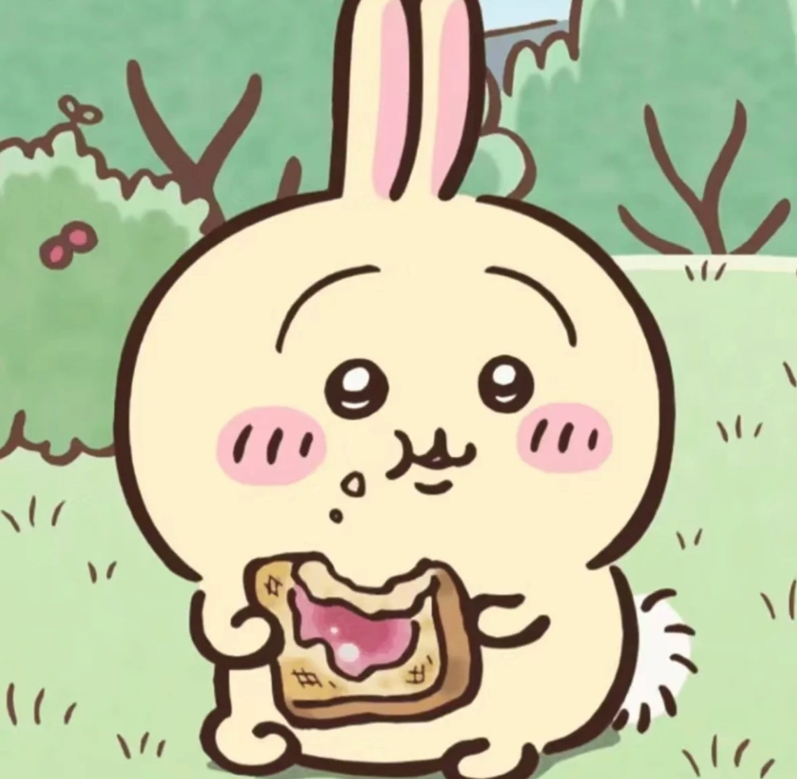
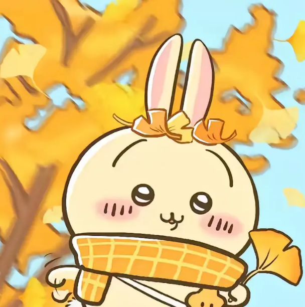
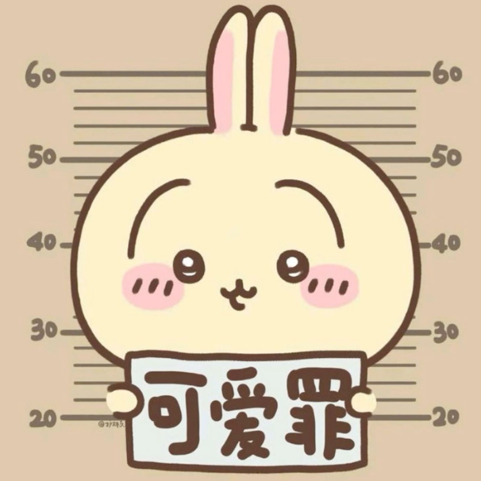

蛤????
《吉伊卡哇》（Chiikawa）是由日本漫畫家 Nagano 創作的熱門作品，全名為《這又小又可愛的小傢伙》。主角是一隻白色、膽小但溫柔的小頭，與開朗的好友「小八貓」及自由奔放的「兔兔」共同生活。 這部作品看似療癒，實則蘊含深刻的現實感。角色們並非無憂無慮，而是需要透過打怪、割草或勞動來賺取工資。故事中不乏「除草檢定」落榜或生活艱辛的橋段，這種「在殘酷世界中努力生存」的設定，引發了無數成年人的情感共鳴。其獨特的「反差萌」與真摯的情誼，讓它在社群媒體迅速爆紅，成為席捲全球的療癒系現象。

咿~呀哈!
《吉伊卡哇》（Chiikawa）是由日本漫畫家 Nagano 創作的熱門作品，全名為《這又小又可愛的小傢伙》。主角是一隻白色、膽小但溫柔的小頭，與開朗的好友「小八貓」及自由奔放的「兔兔」共同生活。 這部作品看似療癒，實則蘊含深刻的現實感。角色們並非無憂無慮，而是需要透過打怪、割草或勞動來賺取工資。故事中不乏「除草檢定」落榜或生活艱辛的橋段，這種「在殘酷世界中努力生存」的設定，引發了無數成年人的情感共鳴。其獨特的「反差萌」與真摯的情誼，讓它在社群媒體迅速爆紅，成為席捲全球的療癒系現象。

嗚啦!!!!
《吉伊卡哇》（Chiikawa）是由日本漫畫家 Nagano 創作的熱門作品，全名為《這又小又可愛的小傢伙》。主角是一隻白色、膽小但溫柔的小頭，與開朗的好友「小八貓」及自由奔放的「兔兔」共同生活。 這部作品看似療癒，實則蘊含深刻的現實感。角色們並非無憂無慮，而是需要透過打怪、割草或勞動來賺取工資。故事中不乏「除草檢定」落榜或生活艱辛的橋段，這種「在殘酷世界中努力生存」的設定，引發了無數成年人的情感共鳴。其獨特的「反差萌」與真摯的情誼，讓它在社群媒體迅速爆紅，成為席捲全球的療癒系現象。

噗嚕!
《吉伊卡哇》（Chiikawa）是由日本漫畫家 Nagano 創作的熱門作品，全名為《這又小又可愛的小傢伙》。主角是一隻白色、膽小但溫柔的小頭，與開朗的好友「小八貓」及自由奔放的「兔兔」共同生活。 這部作品看似療癒，實則蘊含深刻的現實感。角色們並非無憂無慮，而是需要透過打怪、割草或勞動來賺取工資。故事中不乏「除草檢定」落榜或生活艱辛的橋段，這種「在殘酷世界中努力生存」的設定，引發了無數成年人的情感共鳴。其獨特的「反差萌」與真摯的情誼，讓它在社群媒體迅速爆紅，成為席捲全球的療癒系現象。